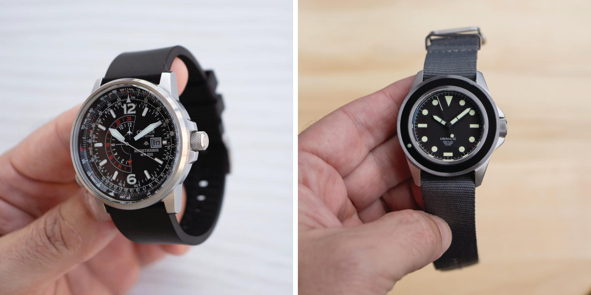
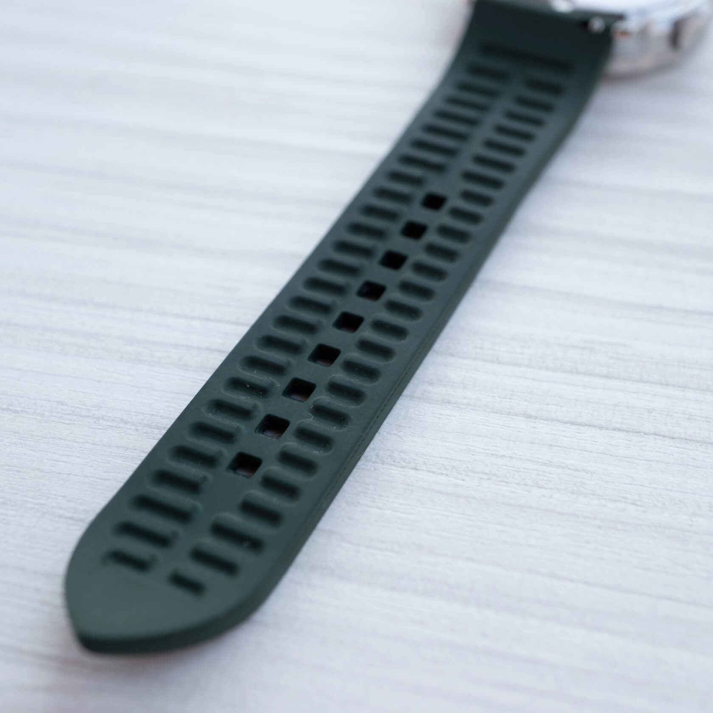
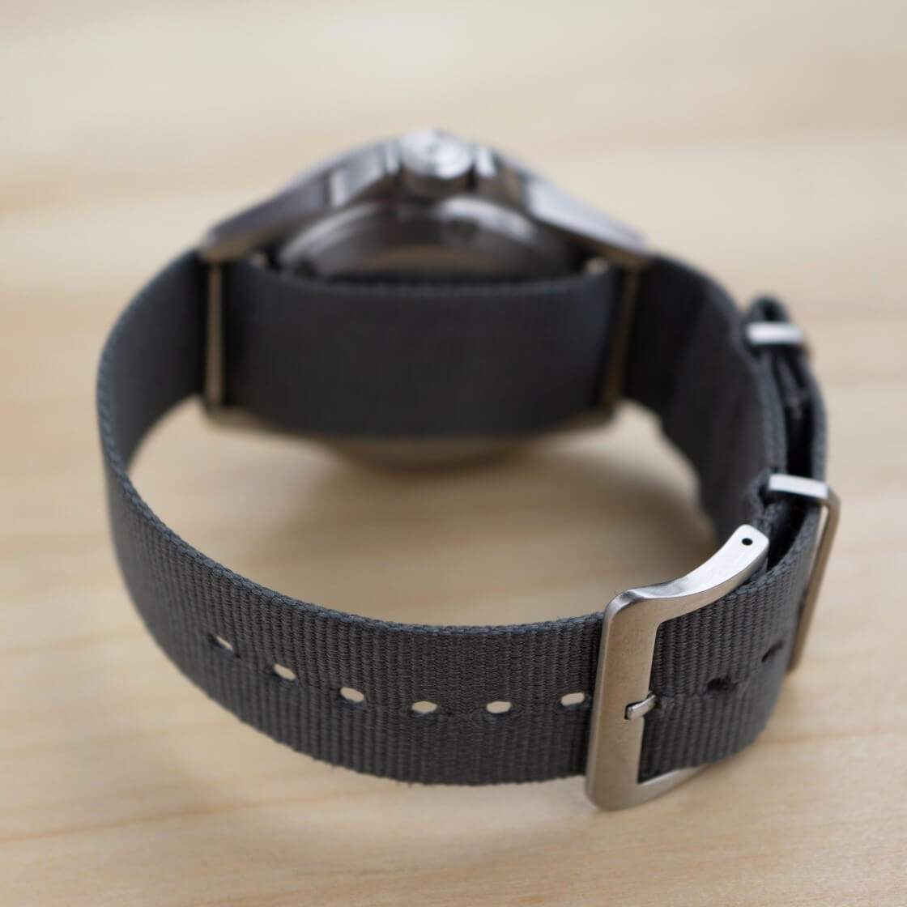

Rubber or Nylon: What's the Best Watch Strap for Summer?
The hot summer days are upon us, and with them comes the annual debate: what is the ultimate material for a summer watch strap? The topic recently created an amusing back-and-forth on a episode of “That Watch Podcast”, with the usual suspects offering their opinions and a fair bit of lighthearted banter. This got me thinking (and sweating) as I considered the pros and cons of the decision between rubber and nylon.
 Nenad Pantelic • August 2, 2025
Nenad Pantelic • August 2, 2025

Rubber, The Quintessential Summer Strap, Right?
Rubber, often defined as "the quintessential summer strap", definitely has some advantages.
It is waterproof, easily cleaned, and generally quite robust. Modern rubber straps are very comfortable. Also, after a dunk in the ocean or a particularly humid afternoon a quick rinse under the tap and a wipe with a towel, and you are good to go.
You don't have to worry about sunscreen or saltwater damaging them.


They also tend to be quite comfortable against the skin, and they offer a secure fit. All these properties are great if you are engaging in more active pursuits.
Really nice list of pros.
But, let's be honest, the "perfect for summer" label often glosses over some significant downsides. The very properties that make rubber water-resistant can also lead to a not so pleasant microclimate under the strap.
Sweat buildup is a common complaint. This leads to that dreaded “damp wrist” sensation. And let us not forget the awkward stickiness that some rubber compounds have during high heat and humidity.
Lightweight, Breathable, and Occasionally Soggy Nylon
Then we have nylon, in its most popular iteration, the NATO strap. Or nylon pass-through strap, so that jerk is not annoyed.
Natos have jumped in popularity for good reason. They are undeniably lightweight and, at least initially, feel more breathable than rubber.
To quote one famous strap store: "The vast array of colors and patterns available allows for easy customization and a touch of summery flair on the wrist".
For us who appreciate a more casual and utilitarian look the nylon strap is a natural fit.

But! The nylon straps are not perfect for summer wear and has its own set of drawbacks. For sure, they might feel airy at first, but once they absorb moisture, be it sweat or a splash of water, they tend to hold onto it. This leads to a persistently damp feeling against the skin, and the drying time can be considerably longer than that of rubber.
The multi-layer construction, with the second underkeeper piece, can also contribute to trapped moisture.
When some nylon straps get wet, they can become a little loose. This can make the watch feel unbalanced and slide around on your wrist. To fix this, you have to tighten the strap, but that can feel unpleasant once it dries.
And let’s not forget that a perpetually wet nylon strap can, shall I say, develop a certain… aroma over time if not properly cleaned.
So Which One Wins?
I really don't know! The truth is that it comes down to personal preference and how you plan to use your watch. Consider how you spend your summer days, and how sweaty your wrist tends to get.
If you are spending your days in and out of the water and prioritize quick drying time above all else, a quality rubber strap might still be your best bet.
If breathability and lightweight comfort are your primary concerns, and you don’t mind the prospect of a damp strap that might take a while to dry, then a nylon nato could be a viable option, especially if you have a few to rotate.
As For Me?
Nylon takes it. That’s just how my lifestyle works. I value breathability, lightweight comfort, and the easy wearability of a good nato. Plus, I like the feel of a pass-through strap on my wrist, which I prefer over a rubber one. Nylon isn't perfect, but it works better for me.
And for sure, if you want to hear a few more takes, some serious, some less so, check out the "That Watch Podcast" episode that kicked off this debate.
The guys weigh in with personal experiences, a couple of questionable color choices, and a lot of fun.
Stay cool out there 😎